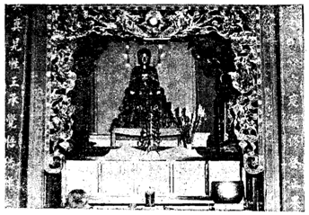

CỔ-TỰ PHƯỚC-THẠNH
Trên lãnh-thổ Việt-Nam, từ Nam-Quan cho đến mũi Cà-Mau, còn lắm nơi có nhiều di tích lịch sử, khởi đầu lúc Chúa Nguyễn-Phúc-Ánh trên đường bôn nam tẩu bắc, lẩn tránh Tây-Sơn. Dấu chân Ngài cùng các quan hộ giá dẫm khắp các nơi ở miền Nam, từ rừng núi, đồng bằng, các hòn đảo đều có dấu chân Ngài bước đến. Những nơi nào Ngài lui tới, đều có lưu lại ít nhiều kỷ niệm, di tích lịch sử, cho đến nay người địa phương còn nhắc nhở.
Với tinh thần hiếu cổ, chúng tôi không nài khó nhọc đi tới tận nơi, vạch bóng người xưa, tìm dấu vết của tiền nhân dày công xây dựng. Theo lời các vị bô lão tỉnh Sa-Đéc ngày nay thuật lại, chúng tôi ghi chép qua lịch sử ngôi Cổ-Tự Phước-Thạnh với những huyền thoại ly kỳ, tô đậm nét nhiệm mầu nơi chốn thiền môn linh ứng, cứu dân độ thế, trừ tà khử bạo.


Bên trong là ngôi Cổ-Tự Phước-Thạnh, phía sau sân chùa là Phật-Đài lộ thiên Đức Quan-Thế-Âm Bồ-Tát.
Ngôi Cổ-Tự Phước-Thạnh là nơi chính lúc Vua Gia-Long tẩu quốc ghé lại tạm trú tại Sa-Đéc ít lâu. Ngài khấn nguyện cùng Phật Trời, khi Ngài thống nhất được đất nước, Ngài sẽ dựng lên một ngôi Tam-Bảo thờ Phật. Lòng thành thấu đến cao dày. Sau khi Ngài đắc thành nguyện vọng, liền truyền lệnh cho quan địa phương tỉnh An-Giang dựng lên ngôi "Phước-Thạnh-Tự", nay tọa lạc tại Châu-Thành, Sa-Đéc, xã Tân-Vĩnh-Hòa. Cổ-Tự Phước-Thạnh kiến tạo từ năm Gia-Long thứ 14 (1812). Trên linh vị thờ tại chùa, ghi là "Việt-Hoàng sáng tạo Phước-Thạnh-Tự". Hiện nay linh vị như một sắc chỉ ghi chứng tích.
Tương truyền: Ngôi Cổ-Tự Phước-Thạnh, các tượng Phật lớn bằng đồng đều do Đức Vua sau ba ngày trai tịnh, tự tay rót đồng đúc Phật, rồi đưa vào chùa. Do ảnh hưởng lòng chí thành và công đức của vị chơn mạng, nên về sau ngôi chùa rất có nhiều sự linh ứng.
Từ ngày dựng ngôi chùa đến nay đã trải qua lắm vị Cao-tăng Đại-đức liên tục gìn ngôi Tam-Bảo, qua bao đời Hòa-Thượng, Yết-Ma, Giáo-Thọ. Vì thời gian quá lâu, lại không tìm thấy sách vở gì lưu lại, không ai nhớ rõ danh tánh các vị đã trụ trì từ ngày xưa.
Chúng tôi đến viếng chùa, may mắn gặp vị trụ trì Thích-Thiện-Hương, nay ngoài 60 tuổi, ân cần tiếp đãi và hướng dẫn chúng tôi đến chánh điện quan chiêm Đức Phật.
Giữa phương-trượng, tượng Đức Phật A-Di-Đà bằng đồng cao một thước, hai bên có ông Thiện và ông Ác cầm giản cao một thước, tướng mạo oai phong. Cốt ông Thiện bằng đồng, ông Ác bằng cây. Các tượng Phật thờ trên chánh điện là do ngoài Triều-đình gởi vào. Ở mé trái, dựa vách, có để một cái trống sấm thật lớn, hai người ôm không giáp. Vật đã lâu đời, nên đôi mặt trống đã lũng, chưa bịch lại. Phía mặt, ngoài cửa bước vào, theo một Đại-hồng-chung rất xưa khắc những hàng cổ-tự trong thời Gia-Long. Lâu ngày chữ đã lì đọc không rõ.
Ngoài ra còn có 18 vị La-Hán rất xưa, nên màu sắc cũng đã phôi pha.
Trước cửa chánh điện ngó vô, thờ đức Hộ-Pháp cao trên một thước, tay cầm thanh giản, oai vệ như vị thiên thần sống động. Chúng tôi nhìn kỹ, thấy cây giản chắp làm ba khúc. Lấy làm lạ, chúng tôi khẽ hỏi vị trụ trì:
- Bạch Thượng-tọa, cây giản trong tay tượng Hộ-Pháp, sao lại gãy đi, mà phải chấp vá?
Vị trụ trì nghiêm trang:
- Tín hữu có lòng thành hỏi đến, âu cũng cơ duyên. Để xuống hậu liêu dùng trà, bần đạo sẽ kể cho nghe.
Chúng tôi có lòng mừng sắp được nghe chuyện lạ, không bỏ lở giây phút quí báo nào, chúng tôi quan chiêm khắp nơi trong chùa và tìm hiểu những gì cần được biết.
Vị trí ngôi chùa tọa lạc, thật thanh u trầm nhả. Chùa xưa, xây cất theo lối cổ điển, hùng vĩ tôn nghiêm, day mặt ra một con rạch (canal de ceinture). Trước sân trồng hàng xoài rợp bóng, mát mẽ quanh năm. Theo lời vị phó trụ trì: hiện trụ trì ngôi Cổ-Tự này là Thượng-Tọa Thích-Từ-Nhơn. Ngài là một trong 12 vị Hội-Đồng Viện Hóa-Đạo, cấp lãnh đạo Giáo-Hội Phật-Giáo Việt-Nam Thống-Nhất.
Thượng-Tọa Từ-Nhơn đã trụ trì nơi đây 38 năm và được thọ truyền y bát của Hòa-Thượng Thiện-Đạo, là vị Hòa-Thượng kế vị chư Thượng-Tọa xưa.
Thượng-tọa Từ-Nhơn là một vị giảng sư đã hơn 20 năm, đem Giao-lý Phật-đà đi truyền bá khắp đó đây và đảm nhiệm chức vụ Trị-Sự-Trưởng Giáo-Hội Tăng-Già tại tỉnh Sa-Đéc, trong suốt thời gian của Giáo-Hội Tăng-Già Nam-Việt. Năm 1964, Thượng-Tọa lên Sài-Gòn công quả Phật-Sự cho Giáo-Hội Phật-Giáo Việt-Nam Thống-Nhất. Đến nay Ngài là người ở trong hàng lãnh đạo Giáo-Hội.
CHUYỆN HỘ-PHÁP ĐÁNH QUÍ
Quan chiêm khắp chùa và đã được biết ít nhiều, chúng tôi theo gót vị phó trụ-trì trở xuống hậu liêu. Rồi như lời đã bảo, vị phó trụ trì kể chuyện vì sao tượng Hộ-Pháp gãy Giản cho chúng tôi nghe. Sau đó, tiếp xúc với một ít người địa phương, chúng tôi cũng được nghe y như lời vị phó trụ trì đã thuật... Nhưng muốn biết rõ một cách thiết thực hơn, chúng tôi về Sài-Gòn tìm ngay đến Văn phòng Phật-Giáo Việt-Nam Thống-Nhất, xin gặp Thượng-Tọa Thích-Từ-Nhơn tại đây, để hỏi sự thật ra sao? Hay người ta thần thánh hóa câu chuyện để mê hoặc lòng người! Thượng-Tọa Từ-Nhơn tiếp xúc chúng tôi với niềm hân hoan. Ngài sẵn sàng kể qua sự tích ngôi Cổ-Tự "Phước-Thạnh" rất nhiều và, cho biết thêm sự việc xảy ra rất là hi hữu:


Đức Hộ-Pháp tay chống giản ma-sử chắp làm 3 khúc thờ trước chánh-điện.
Cách nay trên 30 năm, đã hai lần Đức Hộ-Pháp trong chùa đánh quỉ bằng cây Bảo-Sử (giản ma-sử hay hàng ma-sử tức như cây giản để đánh ma quỉ. Bảo-sử là cây sử, hay cây giản quí báu).
Một buổi chiều kia, khoảng 6 giờ, trời vẫn còn sáng tỏ, bỗng mọi người chung quanh kinh ngạc khi nhìn thấy cây giản trong tay Đức Hộ-Pháp bay đi quanh co trong chùa, nhưng không trúng bàn ghế hay va chạm vào ai. Bay ra tới đường Nguyễn-Tri-Phương, đối diện với sân chùa, cách 70 thước. Giờ ấy là giờ công phu. Tăng chúng trong chùa đều sửng sốt về hiện tượng huyền bí phát hiện: Cây giản tự nhiên sao biết bay? Bay đi đâu? Để làm gì? Hay quỉ ma hiển lộng nên mới có hiện tượng lạ lùng như thế.
Nửa giờ sau, quỉ nhập vào một người lối xóm, ứng tiếng cho biết là nó vô chùa kiếm ăn, bị ông Hộ-Pháp đuổi đánh què chân. Trong nhà phải đem người bị quỉ nhập đến chùa cho quỉ xuất ra. Do đó mới biết cây giản bay đi để đánh quỉ.
Lúc cây giản bay đi, trước sau gãy làm ba đoạn, một đoạn rớt nơi nhà tổ, một đoạn rớt nơi nhà bếp, còn đoạn chót bay ra đến ngoài lộ mới rớt. Ai nấy ước đoán là ông Hộ-Pháp đã đánh quỉ ba lần.
Đến lần thứ nhì, cũng vào lối 6 g chiều, trời đang mưa tầm tả, cây giản trong tay tượng Hộ-Pháp bỗng vụt bay đi như lần trước. Đoạn thứ nhất đánh bể nát cái trả ba tức là cái nồi thật lớn để ở trong chùa dùng để đốt giấy, còn đoạn giản thứ nhì thì bay luôn ra rớt xuống đường. Tuy kỳ này chẳng thấy quỉ nhập vào ai để rõ ra sao, nhưng trong chùa nhiều người thấy có bóng đen chạy vụt từ trong bếp ra ngoài đường.
Hiện nay cây giản vẫn còn ráp lại ba đoạn để thờ trong tay tượng Đức Hộ-Pháp như đã thấy, không làm cây khác thay vào, vị Sư cụ nói đó là sự hiển linh, không nên thay cây Bảo-Sử mới.
Hư thực ra sao? Chúng tôi thuật y những lời đã được nghe kể. Âu cũng là một chuyện hiển linh, cũng như bao sự hiển linh khác ở các nơi mà chúng tôi đã có dịp sưu tầm, nói trong các tác phẩm trước đã xuất bản.
"PHƯỚC-THẠNH-TỰ" NGÀY NAY
Theo chúng tôi thấy, ngôi chùa Phước-Thạnh nay đã quá hư, kèo cột bị mối mọt đục hết. Thượng-Tọa Từ-Nhơn sắp làm lại để bảo tồn di tích của Đức Cao-Hoàng Gia-Long kiến tạo.
Ngày nay, phía sau sân chùa, chúng tôi còn thấy có một Phật-đài lộ thiên, thờ Đức Quan-Thế-Âm Bồ-Tát cao trên 4 thước. Tượng màu trắng tuyết, ngự giữa trời mây, tượng hào quang minh, gương mặt từ bi, đầy lòng bác ái, đôi môi nở nụ cười hoan hỉ, tay cầm nhành dương liễu, mặt hướng về phía đông, dường như quan sát thế trần đang lặn hụp giữa cuộc đời phù hoa giả tạm...
Tượng đài này do Thượng-Tọa Thích-Từ-Nhơn phát nguyện cùng Phật-tử địa phương kiến tạo, khởi công ngày 1 tháng 5 năm 1964 đến tháng 8 trong năm thì hoàn thành.


Vị Cổ Phật-Di-Đà bằng đồng thờ trên Chánh-điện.
Do Triều-Đình Huế gởi vô thờ từ khi có ngôi Cổ-tự này, năm Gia-Long thứ 14 (1812).
Việc làm trên đây là một công trình phát huy đạo pháp, lưu lại cho các thế hệ sau nhắc nhở.
Trước sân đài có trồng nhiều loại hoa tứ quí, cảnh trí rộng rãi khang trang. Du khách cũng như đồng bào phật tử địa phương thường tới lui lễ bái với tất cả lòng thành mến mộ.
Cảnh này đã có sẵn, nếu được nhiều bàn tay điểm xuyến trang hoàng thêm lên nữa, sẽ trở nên một thắng cảnh đạo vị của tỉnh Sa-Đéc, không khác nào các đài Đức Mẹ Fatima ở Vĩnh-Long, đài Đức Mẹ ở Bải Dâu Vũng-Tàu. Rồi đây sẽ có nhiều đoàn thể tôn giáo đến hành hương chiêm ngưỡng.
Trong tương lai, cảnh này ắt còn khởi sắc, hưng thạnh hơn nữa.